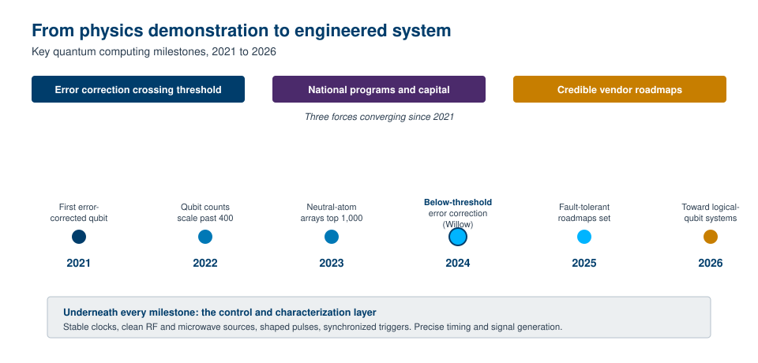

There is a version of the quantum computing story that has been told for decades. In that version, quantum computers are perpetually twenty years away, fascinating to physicists and irrelevant to everyone else. That version is now out of date. Something changed over the last several years, and the change is concrete enough that governments, chip makers, and investors have reorganized their plans around it.
This chapter makes the case for why the subject deserves your attention in 2026 rather than at some vague future date. It does not promise that a quantum computer will sit on your desk soon, because it will not. The claim is narrower and more defensible: the field crossed a set of technical and economic thresholds that move it from open scientific question to engineering program. The questions have shifted from “can this work at all” to “how fast can we scale it and what will it cost.” That shift is the whole reason this book exists, and it is the reason an instrumentation company like Berkeley Nucleonics has a role to play.

We will look at what actually got built, what changed since 2021, why precise measurement and control sit at the center of the whole enterprise, what this book covers, and how to read it depending on what you came here to do.
For most of its history, quantum computing lived in the conditional tense. It was a field of proofs, proposals, and small demonstrations. The theory was beautiful and the hardware was fragile. A handful of qubits would hold their state for a fraction of a second, errors would pile up faster than useful work could be done, and the honest assessment from inside the field was that nobody knew whether the approach could ever scale.
The single hardest problem was error. Qubits are delicate. The slightest interaction with their environment, a stray vibration, a thermal fluctuation, an electromagnetic whisper, knocks them off course. This is called decoherence, and it has been the central obstacle since the beginning. The proposed answer, worked out theoretically in the 1990s, was quantum error correction: spread the information of one reliable “logical” qubit across many imperfect “physical” qubits, so that errors can be detected and fixed faster than they accumulate. The theory predicted a threshold. If the physical error rate dropped below a certain level, then adding more physical qubits would make the logical qubit better rather than worse. Below the threshold, scaling helps. Above it, scaling only adds noise.
For roughly three decades that threshold was a target nobody had hit at scale. In December 2024, Google reported that its Willow processor had crossed it. Their published result showed that as they increased the size of the error-correcting code, the logical error rate fell rather than rose, with the error rate suppressed by a factor of roughly two each time the code distance grew by two [1][2]. The logical qubit outlived its best individual physical qubit. That is the behavior the threshold theorem predicted, observed in hardware at a meaningful scale. It does not mean the problem is solved. It means the central question that haunted the field for thirty years now has an affirmative, experimental answer.
That is the headline, but it sits on top of a broader pattern. Qubit counts climbed from tens to hundreds and, on some platforms, past a thousand physical qubits. Multiple competing hardware approaches, superconducting circuits, trapped ions, neutral atoms, photonics, each posted real progress rather than promises. Demonstrations of small numbers of entangled logical qubits appeared across several groups. None of this makes a useful, general-purpose quantum computer exist today. Taken together, it marks the decade in which quantum computing stopped being purely a question of physics and became, in large part, a question of engineering and scale.
Why pick 2021 as the dividing line? Because the years since cluster into a recognizable phase shift, and tracing the milestones makes the change tangible.
In 2021, a trapped-ion group demonstrated a fully error-corrected logical qubit and kept it alive through repeated correction cycles [3]. This was an early proof that the error-correction machinery worked in practice on a small scale, not just on paper. Over the following years, several threads advanced at once.
Hardware scaled. Superconducting processors pushed past 400 qubits, and by late 2023 a neutral-atom platform fielded an array of more than a thousand physical qubit sites, the first universal platform to cross that line [4]. Raw qubit count is a crude measure, but the trend was unmistakable.
Logical qubits multiplied. Where 2021 had a single corrected logical qubit, later demonstrations entangled tens of logical qubits encoded across larger numbers of physical ones [4]. The unit of progress shifted from physical qubits to logical ones, which is the unit that actually matters for running algorithms.
Error correction crossed the threshold. The 2024 Willow result discussed above turned a thirty-year theoretical target into an experimental fact [1][2].
Roadmaps became specific and falsifiable. In 2025, IBM published a detailed, year-by-year plan to a large-scale fault-tolerant machine, naming intermediate systems and a target of roughly 200 logical qubits executing on the order of 100 million quantum operations by the end of the decade [5][6]. Other vendors published comparably concrete timelines toward thousands and then millions of physical qubits [7]. The plans may slip, as ambitious hardware plans usually do, but their specificity is itself the signal. You do not publish a falsifiable schedule for something you believe is impossible.
Capital and national strategy followed the science. By 2025, public investment in quantum technologies worldwide had climbed into the tens of billions of dollars, with several governments committing multibillion-dollar national programs and large public-private funds aimed squarely at quantum [8][9]. In the United States, new legislation and agency programs directed hundreds of millions to quantum research centers, instrumentation, and network infrastructure [9][10]. (Specific figures move quickly and should be verified before publication.) When national governments treat a technology as strategic infrastructure, the timeline assumptions of the entire field change.
The pattern across all of these is the same. The work moved from “is the physics sound” to “can we build and scale the system.” That is what changed since 2021.
It is tempting to think of a quantum computer as the qubits and nothing else. The qubits get the headlines. But a working quantum computer is a tightly integrated stack, and the largest part of that stack by component count is not the qubits at all. It is the apparatus that prepares them, controls them, and reads them out. This is where measurement and instrumentation move from supporting cast to leading role.
Consider what controlling a qubit actually requires. The qubit must be initialized into a known state, manipulated through a precisely timed sequence of operations, and then measured. Each of those steps is a physical signal. For superconducting qubits, operations are driven by carefully shaped microwave pulses whose frequency, amplitude, phase, and duration must be controlled to exquisite tolerance. For trapped ions and neutral atoms, lasers and radiofrequency fields play the analogous role. In every platform, many control channels must fire in tight synchronization, referenced to a common, stable clock, because the relative timing between operations is as important as the operations themselves. A pulse that arrives slightly early, slightly late, or slightly off frequency is not a small error. It is the kind of error the entire error-correction apparatus then has to spend resources cleaning up.
This is why noise is the enemy at every layer. Phase noise on a clock, jitter on a trigger, spurious tones on a microwave source, drift in a signal generator: each of these degrades qubit fidelity directly. Better error correction helps, but error correction is far easier when the underlying physical operations are cleaner to begin with. There is a direct line from the quality of the control and timing hardware to the number of physical qubits required per logical qubit, and therefore to how soon a useful machine becomes practical. Improving the instrumentation is not a side quest. It is on the critical path.
Going Deeper - Why timing precision compounds
Errors in a quantum computer do not stay local. Because the machine works by orchestrating interference and entanglement across many qubits, a timing or phase error on one control channel can corrupt a result that depends on the coordinated state of the whole register. As algorithms grow longer and involve more qubits, the tolerances on timing and signal purity get tighter, not looser. This is the opposite of much of classical electronics, where margins often relax as you integrate. In quantum control, scale demands more precision, not less, which is precisely why high-performance timing and signal-generation hardware becomes more valuable as the field matures.
This is the layer where an instrumentation company has a natural role. Berkeley Nucleonics has spent decades on exactly these problems in test, measurement, and timing: stable clocks and frequency references, low-noise signal generation, precisely shaped and synchronized pulses, and accurate triggering and delay generation. The control and characterization layer of a quantum computer is built from this kind of engineering. As the field moves from one-off physics demonstrations to repeatable, engineered systems, the demand for reliable, low-noise, high-precision control and timing hardware grows in step.
BNC in Practice - The control and timing layer
The relevance here is concrete rather than abstract. Quantum systems are sensitive to their environment in a way few other systems are, and characterizing and controlling them depends on clean timing and clean signals. Stable references, low phase noise, accurate pulse shaping, and tightly synchronized triggers are the recurring requirements across hardware platforms. These are the same engineering problems instrumentation companies have worked on for decades in adjacent fields, which is why that experience transfers directly into the quantum control stack. Any specific BNC product fit for a given quantum control or characterization task should be verified against the current datasheet and confirmed with BNC engineering before it is cited.
The broader point is that quantum computing is not only a story about qubits. It is a story about the instruments that make qubits behave. Keep that lens in mind throughout the book, because it reframes a great deal of what follows.
This book is a guided tour of quantum computing for people who need a real working understanding without a graduate course in physics. It favors clarity over completeness and intuition over formalism, while staying honest about where the hard parts are.
The path runs roughly as follows. After this chapter, the introduction lays out where quantum computing came from and what it fundamentally is, including the century-plus of physics it rests on. From there the book builds up the vocabulary and the core concepts: the key terms you need, how quantum computation differs from classical computation, and the strange but learnable ideas of superposition, interference, and entanglement.
The middle of the book gets into the machinery. It covers the layers of a quantum computing system from the qubits up through control and software, the different computational models such as gate-based, measurement-based, topological, and analog approaches, and the competing physical hardware platforms with their respective strengths and weaknesses. Throughout, the role of error and error correction recurs, because it is the thread that connects almost every design decision in the field.
The later chapters turn to the present and the future: where quantum computing stands today, how you can actually access and experiment with real machines, what a career in the field looks like, and how the landscape is likely to evolve. The book closes with appendices and reference material, including a glossary for the terminology that quantum computing throws at newcomers in heavy doses.
Two commitments run through all of it. First, accuracy over hype. The field is exciting enough without inflation, and this book tries to mark clearly where something is demonstrated, where it is promised, and where it is still uncertain. Second, the instrumentation lens. Because this is a Berkeley Nucleonics book, it pays particular attention to the control, timing, and measurement layer that most general introductions skip, and which turns out to be one of the most practical and underappreciated parts of the whole story.
Readers arrive at this subject for different reasons, and the book is built to serve at least three of them. You do not have to read every chapter in order. Pick the path that matches your goal and follow it.
If you are learning quantum computing for its own sake, read straight through. Start with the introduction and the key terms, take your time with the chapters on how quantum differs from classical computing and the core concepts of superposition, interference, and entanglement, then continue through the models and hardware platforms. Do the chapter quizzes as you go; they are short, self-graded, and designed to confirm that the ideas actually landed before you build on them. The glossary in the appendix is your friend when a term feels slippery.
If you are evaluating quantum computing for a project or an organization, weight your attention toward the chapters on where quantum computing stands today, the physical hardware approaches and their trade-offs, how to access real machines, and the landscape and future chapters. You still want the conceptual chapters for vocabulary and for separating real capability from marketing, but your decisions will hinge on the state of the art, the maturity of each platform, and the honest distance between today’s demonstrations and a useful production system. Pay particular attention to the discussions of error correction and logical qubits, because those determine when, not whether, the technology becomes practical for a given problem.
If you are building or researching quantum systems, you likely have the conceptual foundation already, so use the early chapters as a shared-vocabulary reference and spend your time on the system-layer, hardware, and control chapters. The instrumentation lens running through this book is aimed especially at you. The sections on timing, signal generation, pulse shaping, and synchronization connect directly to the daily reality of getting qubits to behave, and the discussion of how control quality affects error-correction overhead is meant to be practically useful, not just descriptive. When a control or characterization need maps to specific instrumentation, treat the book as a starting point and verify exact product fit against current datasheets and with engineering.
Whichever path you take, the goal is the same: to leave you with an accurate, durable mental model of what quantum computing is, why it matters now, and where the real engineering work lies. The next chapter begins at the beginning, with how it all started and what a quantum computer actually is.
Take it interactively. The quiz lives on its own page with hidden answers - write your attempt first (even four characters works), then reveal. Self-graded. About 10 minutes.
Or read the questions and answers inline below (preserved for print and offline use).
[1] Google Quantum AI, “Quantum error correction below the surface code threshold,” Nature, December 2024. Verify before publication.
[2] Google Quantum AI announcement of the Willow processor (105-qubit superconducting chip; logical error rate suppressed as code distance increases), December 9, 2024. Verify before publication.
[3] Quantinuum (formerly Honeywell Quantum Solutions), demonstration of a fault-tolerant logical qubit using the Steane code, 2021. Verify before publication.
[4] Atom Computing and Microsoft, neutral-atom array exceeding 1,000 physical qubit sites (2023) and demonstrations entangling multiple logical qubits. Verify before publication.
[5] IBM, “IBM lays out clear path to fault-tolerant quantum computing,” IBM Quantum blog, June 2025. Verify before publication.
[6] IBM Quantum Starling roadmap: target of approximately 200 logical qubits and on the order of 100 million quantum operations by 2029, IBM Quantum Data Center, Poughkeepsie, NY. Verify before publication.
[7] IonQ and other vendor roadmaps projecting scaling to thousands and then millions of physical qubits later this decade. Verify before publication.
[8] Global public investment in quantum technologies reaching tens of billions of dollars by 2025, including multibillion-dollar national commitments. Verify before publication.
[9] U.S. national quantum funding programs, including Department of Energy and National Quantum Initiative research centers, instrumentation, and network infrastructure. Specific figures should be verified before publication.
[10] U.S. Department of Commerce / NIST quantum computing leadership initiatives, 2025 to 2026. Verify before publication.